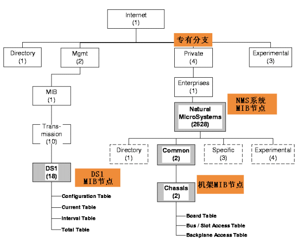
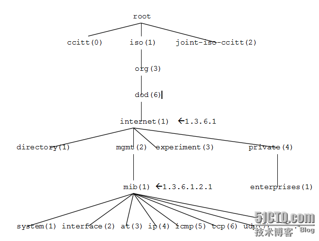
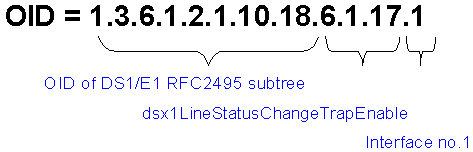

使用snmp协议获取centos系统相关信息
实验环境：
操作系统：CentOS Linux release 7.2.1511
内核：3.10.0-327.13.1.el7.x86_64
注：
由于北京WAF设备授权证书过期，无法配置使用snmp，因此在centos进行试验。
snmp及net-snmp简介
1. 什么是SNMP
“简单网络管理协议”，用于网络管理的协议。SNMP用于网络设备的管理。SNMP的工作方式：管理员需要向设备获取数据，所以SNMP提供了“读”操作；管理员需要向设备执行设置操作，所以SNMP提供了“写”操作；设备需要在重要状况改变的时候，向管理员通报事件的发生，所以SNMP提供了“Trap”操作。
2. 支持的基本操作
对于网络管理，我们面对的数据是设备的配置、参数、状态等信息，面对的操作是读取和设置；同时，因为网络设备众多，为了能及时得到设备的重要状态，还要求设备能主动地汇报重要状态，这就是报警功能。
读取设备信息—— get
设置设备参数—— set
发送设备告警—— trap
3. snmp协议版本
SNMP共有v1，v2，v3这三个版本：
1. v1和v2都具有基本的读、写MIB功能。
2. v2增加了警报、批量数据获取、管理站和管理站通信能力。
3. v3在v2的基础上增加了USM，使用加密的数据和用户验证技术，提高了安全性。
4. 另外，RMON是SNMP的一个重要扩展，为SNMP增加了子网流量、统计、分析能力。现有两个版本： Rmon：提供了OSI七层网络结构中网络层和数据链路层监视能力。Rmon2：提供了OSI七层网络结构中网络层之上各层的监视能力。
4. mib介绍
MIB－管理信息库：IETF规定的管理信息库MIB（由中定义了可访问的网络设备及其属性，由对象识别符（OID：Object Identifier）唯一指定。MIB是一个树形结构，SNMP协议消息通过遍历MIB树形目录中的节点来访问网络中的设备。下图给出了NMS系统中SNMP可访问网络设备的对象识别树（OID：Object Identifier）结构：

上图中的节点是从internet开始的，其实上面还有几个节点请如下图：

下图给出了对一个DS1线路状态进行查询的OID设置例子:

5. net-snmp工具简介
Net-snmp是一个开源的SNMP项目。最新版本为：5.7.2。net-snmp支持snmpv1、snmpv2、snmpv3，支持基于IPv4和IPv6的SNMP应用程序。
* Net-snmp提供完整的API用于SNMP应用程序开发，包括C和Perl的API 。
* 一个功能强大且可扩展的SNMP代理：snmpd开发者可以开发动态模块扩展snmpd，net-snmp内置扩展子代理与主代理的通信协议。
* 提供众多命令行工具检查和使用SNMP协议
* 一个图形化的MIB浏览工具
* 一个Trap接收进程，用于接收和显示Trap，并将Trap记录到日志文件中。
使用net-snmp作为学习SNMP的工具，搭建一个net-snmp环境，用来测试snmp协议。
安装net-snmp
yum intall net-snmp net-snmp-devel net-snmp-libs net-snmp-utils
命令介绍：
- net-snmp-config：（net-snmp-devel包中）查看已安装的net-snmp的相关信息，比如可以用
net-snmp-config --default-mibdirs查看MIB文件的位置（也可以用snmptranslate -Dinit_mib .1.3 2>&1 |grep MIBDIR查看）；也可以用：net-snmp-config --create-snmpv3-user [-ro] [-a authpass] [-x privpass] [-X DES|AES] [-A MD5|SHA] [username]来创建snmpv3 user：
对应的参数可以在WAF设配中的SNMP配置中一一对应。-a authpass：用户密码 -A MD5|SHA：用户密码加密方式 -x privpass：传输加密密码 -X DES|AES：传输加密方式 username：用户名 snmpconf：创建或者修改snmp的相关配置文件snmpget：模拟snmp的GetRequest操作的工具。一般用来获取管理信息节点下单个示例的信息。snmpnext：模拟snmp的GetNextRequest操作的工具。用来获取一个管理信息实例的下一个可用实例数据。一般用来遍历SNMP中的表格数据。容错性比snmpget好，因此一般用它，而不是用snmpget。snmpset：模拟snmp的SetRequest操作的工具。用来设置可以写的管理信息。一般用来配置设备或对设备执行操作。snmpbulkget：模拟snmp的GetBulkRequest操作的工具。用来获取大块的数据。一般在大量读取大块数据时使用，以提高带宽利用率，并且比使用snmpget、snmpgetnext及snmpwalk有更强的容错能力，代理会返回尽可能多的数据，比其它命令更有保证。snmpwalk：利用GetNextRequest对给定的管理树进行遍历的工具。一般用来对表格类型管理信息进行遍历。snmptrap：模拟trap的工具。用来发送模拟trap。一般用来测试管理站安装和配置是否正确，或者用来验证开发的Trap接收程序是否可以正常工作。- snmptrapd：接收并显示trap的工具。一般在代理的开发过程中，接收代理发来的Trap，并将PDU细节打印出来，也来测试Trap发送功能是否正常。
- snmpinform：模拟发送InformRequest的工具。跟snmptrap类似，用来发送模拟的带应答的Trap，以测试管理站或自己开发的接收程序。
- snmptable：使用GetNextRequest 和 GetBulkRequest操作读取表信息，以列表形式显示的工具。
- snmpstatus：从SNMP实体读取几个重要的管理信息以确定设备状态的工具。用来简单测定设备状态。
snmpbulkwalk：利用GetBulkRequest实现对给定管理树进行遍历的工具。对表格类型的管理信息进行遍历读取。- snmpdelta：用来监视Integer类型的管理对象，会及时报告值改变情况的工具。用于监测一个设备或开发中的代理。
- snmptest：是一个复杂的工具，可以监测和管理一个网络实体的信息，通过SNMP请求操作与管理实体通信。
snmptranslate：将对象名字和标识符相互转换的工具。用于数据格式的对象标识和可读式字符串的数据名称的转换。类似于域名与IP地址的关系。snmpusm：SNMPv3 USM配置工具。用于SNMPv3的用户管理。snmpvacm：为一个网络实体创建和维护SNMPv3的基于视图访问控制参数的工具。用于维护SNMPv3的视图访问控制。snmpd：Net-snmp开发的主代理程序，包括众多标准MIB的实现。还可以使用子代理对其进行扩展，是一个功能强大的SNMP代理。Linux、Unix和Windows系统运行snmpd后，直接具备了SNMP协议支持，可以被管理站管理。许多商业化的Linux中使用snmpd作为系统的SNMP代理。- snmpdf：通过SNMP访问并显示网络实体磁盘利用情况的工具。用来监测网络实体的磁盘。
上面这些命令常用的参数有：
例如：-v 1|2c|3 : snmp版本 -c community : v1/v2的community name[root@centos-desktop snmp]# snmpwalk -c public -v2c localhost ifIF-MIB::ifIndex.1 = INTEGER: 1 IF-MIB::ifIndex.2 = INTEGER: 2 IF-MIB::ifIndex.3 = INTEGER: 3 IF-MIB::ifIndex.4 = INTEGER: 4 IF-MIB::ifDescr.1 = STRING: lo IF-MIB::ifDescr.2 = STRING: eno16777736 IF-MIB::ifDescr.3 = STRING: virbr0 IF-MIB::ifDescr.4 = STRING: virbr0-nic IF-MIB::ifType.1 = INTEGER: softwareLoopback(24) IF-MIB::ifType.2 = INTEGER: ethernetCsmacd(6) IF-MIB::ifType.3 = INTEGER: ethernetCsmacd(6) IF-MIB::ifType.4 = INTEGER: ethernetCsmacd(6) IF-MIB::ifMtu.1 = INTEGER: 65536 IF-MIB::ifMtu.2 = INTEGER: 1500 IF-MIB::ifMtu.3 = INTEGER: 1500 IF-MIB::ifMtu.4 = INTEGER: 1500 IF-MIB::ifSpeed.1 = Gauge32: 10000000 IF-MIB::ifSpeed.2 = Gauge32: 1000000000 IF-MIB::ifSpeed.3 = Gauge32: 0 IF-MIB::ifSpeed.4 = Gauge32: 10000000 IF-MIB::ifPhysAddress.1 = STRING: IF-MIB::ifPhysAddress.2 = STRING: 0:c:29:48:3f:11 IF-MIB::ifPhysAddress.3 = STRING: 52:54:0:c6:ee:66 IF-MIB::ifPhysAddress.4 = STRING: 52:54:0:c6:ee:66
[root@centos-desktop snmp]# snmpget -c public -v1 localhost system.sysDescr.0
SNMPv2-MIB::sysDescr.0 = STRING: Linux centos-desktop 3.10.0-327.13.1.el7.x86_64 #1 SMP Thu Mar 31 16:04:38 UTC 2016 x86_64
snmpd配置
snmp v1/v2配置
- 编辑配置文件
/etc/snmp/snmpd.conf如下：1
2
3
4
5
6
7## snmp v1/v2配置
com2sec notConfigUser default public
group notConfigGroup v1 notConfigUser
group notConfigGroup v2c notConfigUser
view systemview included .1
access notConfigGroup "" any noauth exact systemview systemview none
includeAllDisks 5%
相关解释：
com2sec notConfigUser default public：
定义安全名notConfigUser,并将共同体public归入其中，这里notConfigUser相当于用户名，public相当于密码，因此我们只要知道community（共同体的名称），就可以访相应设备管理信息。group notConfigGroup v1 notConfigUser:
将定义安全组notConfigGroup，并将安全名notConfigUser归入其中，v1参数表示支持snmp v1，可选值为v1|v2c|usmview systemview included .1：
定义systemview视图，表示systemview这个试图包含.1节点及其子节点信息，这里也就是整个管理树。access notConfigGroup "" any noauth exact systemview systemview none：
访问控制，表示notConfigGroup这个安全组可以‘只读’，‘读写’systemview这个视图，any表示安全模式（v1|v2|usm），noauth表示安全模式（auth|noauth|priv），v1，v2c中只能使用noauth。后面三个参数systemview``systemview``none代表的含义一次是：授权可读的视图，授权可写视图，授权可发送trap的视图。includeAllDisks 5%:
磁盘检查配置，这里includeAllDisks表示监视设备所有磁盘，5%表示当磁盘剩余空间小于等于5%时，发送告警（trap）。
snmp v3(usm)配置
利用
net-snmp-config命令创建v3用户(首先关闭snmpd服务-systemctl stop snmpd)：net-snmp-config --create-snmpv3-user -ro -a 1234qwer -A SHA -x 1234qwer -X AES snmpv3user[root@centos-desktop snmp]# net-snmp-config --create-snmpv3-user -ro -a 1234qwer -A SHA -x 1234qwer -X AES snmpv3useradding the following line to /var/lib/net-snmp/snmpd.conf: createUser snmpv3user SHA "1234qwer" AES 1234qwer adding the following line to /etc/snmp/snmpd.conf: rouser snmpv3user
可以看出在/etc/snmp/cnmpd.conf中最后一行增加了一句rouser snmpv3user001。在/etc/snmp/snmpd.conf中添加了一句rouser snmpv3user，这表示snmpv3user这个用户默认可以读取整个管理信息树上所有节点。
手动创建并配置snmpv3用户：
- 关闭snmpd服务
- 在
/var/lib/net-snmp/snmpd.conf中添加一句createUser snmpv3user SHA "1234qwer" AES 1234qwer - 在
/etc/snmp/snmpd.conf中添加一句rwuser snmpv3user .1，格式为r[o|w]user [−s SECMODEL] USER [noauth|auth|priv [OID | −V VIEW [CONTEXT]]] 启动snmpd服务
这样和利用net-snmp-config命令的作用是一样的。测试：[root@centos-desktop snmp]# snmpwalk -l authPriv -u snmpv3user -A 1234qwer -a SHA -X 1234qwer -x AES localhost ifIF-MIB::ifIndex.1 = INTEGER: 1 IF-MIB::ifIndex.2 = INTEGER: 2 IF-MIB::ifIndex.3 = INTEGER: 3 IF-MIB::ifIndex.4 = INTEGER: 4 IF-MIB::ifDescr.1 = STRING: lo IF-MIB::ifDescr.2 = STRING: eno16777736 IF-MIB::ifDescr.3 = STRING: virbr0 IF-MIB::ifDescr.4 = STRING: virbr0-nic IF-MIB::ifType.1 = INTEGER: softwareLoopback(24) IF-MIB::ifType.2 = INTEGER: ethernetCsmacd(6) IF-MIB::ifType.3 = INTEGER: ethernetCsmacd(6) IF-MIB::ifType.4 = INTEGER: ethernetCsmacd(6) IF-MIB::ifMtu.1 = INTEGER: 65536 IF-MIB::ifMtu.2 = INTEGER: 1500 IF-MIB::ifMtu.3 = INTEGER: 1500 IF-MIB::ifMtu.4 = INTEGER: 1500 .........注：
v3 验证常用参数：-v 3 specifies SNMP version to use -u USER-NAME set security name (e.g. bert) -l LEVEL set security level (noAuthNoPriv|authNoPriv|authPriv) -a PROTOCOL set authentication protocol (MD5|SHA) -A PASSPHRASE set authentication protocol pass phrase -x PROTOCOL set privacy protocol (DES|AES) -X PASSPHRASE set privacy protocol pass phrase
安装pysnmp库
yum install python-devel -y
pip install pysnmp
pip install pysnmp-mibs
pysnmp是一个纯python实现snmp协议，并且完全支持v1/v2/v3版本，可以模拟get，walk，next，bulkwalk，trap等命令。pysnmp4.3.0之前版本只有原生api，由CommandGenerator生成一个类似net-snmp的各种命令；pysnmp4.3.0及之后版本，新增hlapi，调用更为简洁。
利用pysnmp获取设备信息
本实验采用原生api。
- snmp v2：
1
2
3
4
5
6
7
8
9
10
11
12
13
14
15
16
17
18
19
20
21
22
23
24
25
26
27
28
29
30
31
32
33
34
35
36
37
38
39
40
41
42
43
44
45
46
47
48
49
50
51
52
53
54
55
56
57
58
59
60
61
62
63
64
65
66
67
68
69
70
71
72
73
74
75
76
77
78
79
80
81
82
83
84
85
86
87
88
89
90
91
92
93
94
95
96
97
98
99
100
101
102
103
104
105
106
107
108
109
110
111
112
113
114
115
116
117
118
119
120
121
122
123
124
125
126
127
128
129
130
131
132
133
134
135
136
137
138
139
140
141
142
143
144
145
146
147
148
149
150
151
152
153
154
155
156
157# -*- coding: utf-8 -*-
import time
from pysnmp.entity.rfc3413.oneliner import cmdgen
def printErr():
pass
def getCpuUsage(targetHost, targetPort, cmd, community):
errIndication, errStatus, errIndex, varBindTable = cmd.nextCmd(
cmdgen.CommunityData(community, mpModel=1), # mpModel=1,表示使用v2协议
cmdgen.UdpTransportTarget((targetHost,targetPort)), # 设备ip及端口
cmdgen.MibVariable('UCD-SNMP-MIB','ssCpuIdle'), # 需要访问信息的MIB库及子节点，也可以用形如'1.3.6.1.4'的方式来定义
#lookupValues=True
)
if errIndication:
print errIndication
else:
if errStatus:
print '%s at %s' % (
errStatus.prettyPrint(),
errIndex and varBindTable[-1][int(errIndex)-1] or '?'
)
else:
return 100.0 - float(varBindTable[0][0][1].prettyPrint())
def getMemUsage(targetHost, targetPort, cmd, community):
errIndication, errStatus, errIndex, varBindTable = cmd.nextCmd(
cmdgen.CommunityData(community, mpModel=1),
cmdgen.UdpTransportTarget((targetHost,targetPort)),
cmdgen.MibVariable('UCD-SNMP-MIB','memTotalReal'), #'1.3.6.1.4.1.2021.4.5',
cmdgen.MibVariable('UCD-SNMP-MIB','memAvailReal'), #'1.3.6.1.4.1.2021.4.6',
cmdgen.MibVariable('UCD-SNMP-MIB','memBuffer'), #'1.3.6.1.4.1.2021.4.14',
cmdgen.MibVariable('UCD-SNMP-MIB','memCached'), # '1.3.6.1.4.1.2021.4.15',
#lookupValues=True
#lookupNames=True
)
if errIndication:
print errIndication
else:
if errStatus:
print '%s at %s' % (
errStatus.prettyPrint(),
errIndex and varBindTable[-1][int(errIndex)-1] or '?'
)
else:
mysum = 0.0
totalAvailReal = float(varBindTable[0][0][1].prettyPrint())
for var in varBindTable:
for name , val in var:
mysum += float(val.prettyPrint())
return (2*totalAvailReal - mysum) / totalAvailReal * 100.0
def getIfaceTraffic(targetHost, targetPort, cmd, community, period):
def getNowTraffic():
errIndication, errStatus, errIndex, varBindTable = cmd.nextCmd(
cmdgen.CommunityData(community, mpModel=1),
cmdgen.UdpTransportTarget((targetHost,targetPort)),
cmdgen.MibVariable('IF-MIB', 'ifDescr'), # '1.3.6.1.2.1.2.2.1.2'
cmdgen.MibVariable('IF-MIB', 'ifInOctets'), # '1.3.6.1.2.1.2.2.1.10'
cmdgen.MibVariable('IF-MIB', 'ifOutOctets'), #'1.3.6.1.2.1.2.2.1.16'
#lookupValues=True,
#lookupNames=True
)
if errIndication:
print errIndication
else:
if errStatus:
print '%s at %s' % (errStatus.prettyPrint(), errIndex \
and varBindTable[-1][int(errIndex)-1] or '?')
else:
result = []
#print varBindTable
for var in varBindTable:
tempResult = {}
for name , val in var:
tempResult[name.getLabel()[len(name.getLabel())-1]] = val.prettyPrint()
result.append(tempResult)
return result
preTraffic = getNowTraffic()
#print preTraffic
time.sleep(period)
afterTraffic = getNowTraffic()
#print afterTraffic
traffic = []
if(len(preTraffic) != len(afterTraffic)):
return None
else:
ifaceNum = len(preTraffic)
for i in range(ifaceNum):
if preTraffic[i]['ifDescr'] == afterTraffic[i]['ifDescr']:
m = float(preTraffic[i]['ifInOctets'])
mm = float(afterTraffic[i]['ifInOctets'])
n = float(preTraffic[i]['ifOutOctets'])
nn = float(afterTraffic[i]['ifOutOctets'])
ifaceName = preTraffic[i]['ifDescr']
traffic.append({
'ifaceName':ifaceName,
'inTraffic(Mbps)':(mm-m)/period/1048576*8,
'outTraffic(Mbps)':(nn-n)/period/1048576*8
})
else:
return None
return traffic
def getDiskUsage(targetHost, targetPort, cmd, community):
errIndication, errStatus, errIndex, varBindTable = cmd.nextCmd(
cmdgen.CommunityData(community, mpModel=1),
cmdgen.UdpTransportTarget((targetHost,targetPort)),
cmdgen.MibVariable('UCD-SNMP-MIB', 'dskPath'), # '1.3.6.1.4.1.2021.9.1.2'
cmdgen.MibVariable('UCD-SNMP-MIB', 'dskTotal'), # '1.3.6.1.4.1.2021.9.1.6'
cmdgen.MibVariable('UCD-SNMP-MIB', 'dskPercent'), #'1.3.6.1.4.1.2021.9.1.9'
cmdgen.MibVariable('UCD-SNMP-MIB', 'dskDevice'), #'1.3.6.1.4.1.2021.9.1.3'
#lookupValues=True,
#lookupNames=True
)
if errIndication:
print errIndication
else:
if errStatus:
print '%s at %s' % (errStatus.prettyPrint(), errIndex \
and varBindTable[-1][int(errIndex)-1] or '?')
else:
result = []
for var in varBindTable:
tempResult = {}
for name , val in var:
tempResult[name.getLabel()[len(name.getLabel())-1]] = val.prettyPrint()
result.append(tempResult)
return result
if __name__ == '__main__':
targetHost = '192.168.184.136'
targetPort = 161
cmd =cmdgen.CommandGenerator()
print 'CPU使用率：%s' % \
getCpuUsage(targetHost, targetPort, cmd, 'public')
print '内存使用率：%s' % \
getMemUsage(targetHost, targetPort, cmd, 'public')
period = 10
print '网卡流量（%ss)：%s' % (period, getIfaceTraffic(targetHost, targetPort, cmd, 'public', period))
print '磁盘使用情况：%s' % getDiskUsage(targetHost, targetPort, cmd, 'public')
输出结果：1
2
3
4
5
6
7
8
9
10
11
12CPU使用率：1.0
内存使用率：29.1881375539
网卡流量（10s)：[{'inTraffic(Mbps)': 0.0, 'ifaceName': u'lo', 'outTraffic(Mbps)': 0.0},
{'inTraffic(Mbps)': 0.0009063720703125, 'ifaceName': u'eno16777736', 'outTraffic(Mbps)': 0.00093841552734375},
{'inTraffic(Mbps)': 0.0, 'ifaceName': u'virbr0', 'outTraffic(Mbps)': 0.0},
{'inTraffic(Mbps)': 0.0, 'ifaceName': u'virbr0-nic', 'outTraffic(Mbps)': 0.0}]
磁盘使用情况：[{'dskTotal': '27740944', 'dskPercent': '21', 'dskPath': u'/', 'dskDevice': u'/dev/mapper/centos-root'},
{'dskTotal': '2015908', 'dskPercent': '0', 'dskPath': u'/dev/shm', 'dskDevice': u'tmpfs'},
{'dskTotal': '2015908', 'dskPercent': '0', 'dskPath': u'/run', 'dskDevice': u'tmpfs'},
{'dskTotal': '2015908', 'dskPercent': '0', 'dskPath': u'/sys/fs/cgroup', 'dskDevice': u'tmpfs'},
{'dskTotal': '508588', 'dskPercent': '42', 'dskPath': u'/boot', 'dskDevice': u'/dev/sda1'},
{'dskTotal': '403184', 'dskPercent': '0', 'dskPath': u'/run/user/0', 'dskDevice': u'tmpfs'}]
- snmp v3
1 |
|
输出结果：
1.0
使用snmp v1/v2与snmp v3协议的唯一不同之处，在于验证方式的不同。